DCS'e Mesh Export Etme#
Materyali Hazırlama#
İlk mesh'inizi .edm formatına export etmek için aşağıdaki gibi boş bir Blender cube ile başlayın.
Modelinizin "Front" yönü pozitif X'e bakar; bu yüzden aracınızın veya uçağınızın burnunu pozitif X'e doğru hizaladığınızdan emin olun.
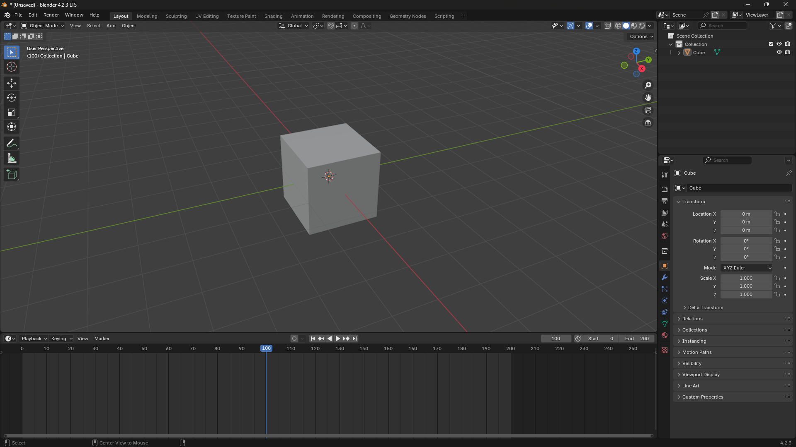
Note
Mesh'inizin Rotation ve Scale değerlerinin uygulanmış olduğundan emin olun. Bunu mesh'i seçip CTRL + A tuşlarına basarak ve Rotation and Scale seçerek yapabilirsiniz.
Shading sekmesine geçin. Cube varsayılan olarak materyale sahip değilse bir materyal oluşturun.
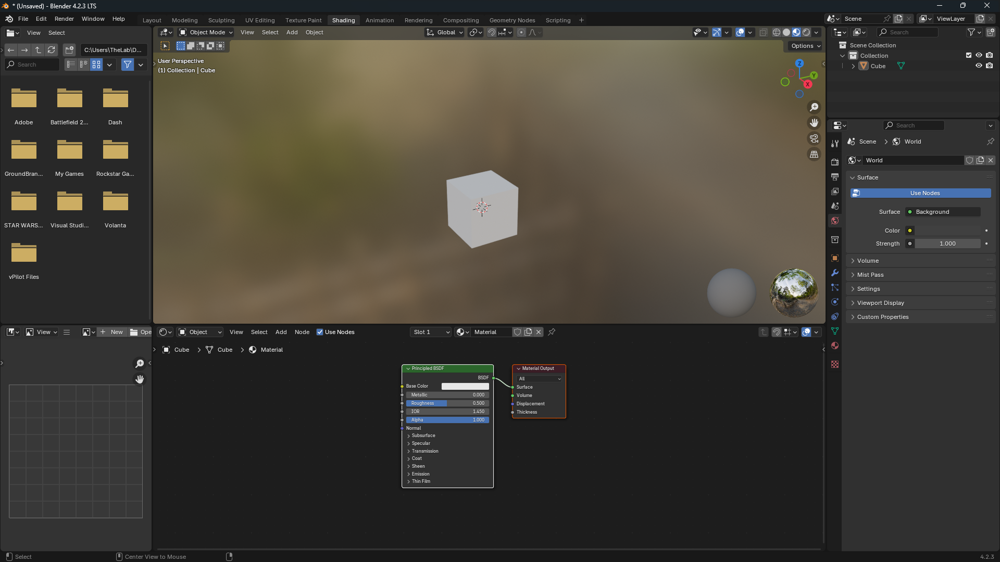
Sonra materyal node'larını EDM Materials ile yapılandırmamız gerekir.
Önce varsayılan Principled BSDF node'unu kaldırın, ancak Material Output node'unu bırakın.
Ardından SHIFT + A tuşlarına basarak veya Node Editor içinde Add seçeneğine tıklayarak EDM Materials > Material - Default yoluna gidin.
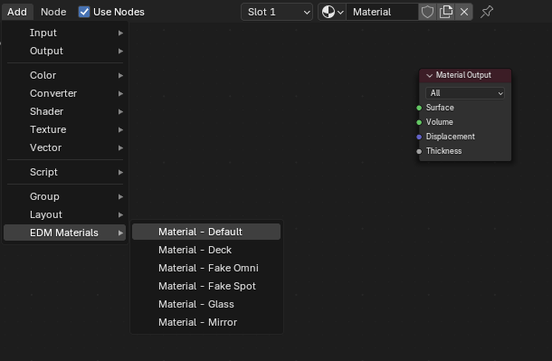
EDM_Default_Material node'u yerindeyken EDM materyalinin BSDF noktasını Material Output içindeki Surface noktasına bağlayın. Aşağıda bunun bir örneği görülebilir.
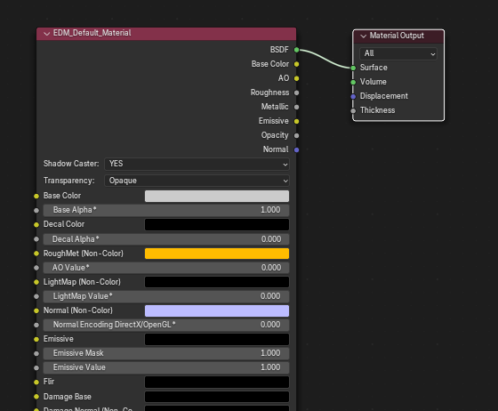
EDM'e Export Etme#
Artık cube'u .edm dosyasına export etmeye hazırız.
File > Export > Eagle Dynamics Model (.edm) yoluna gidin.
Ardından dosyanızı adlandırın ve export to EDM düğmesine tıklayarak istediğiniz konuma kaydedin.
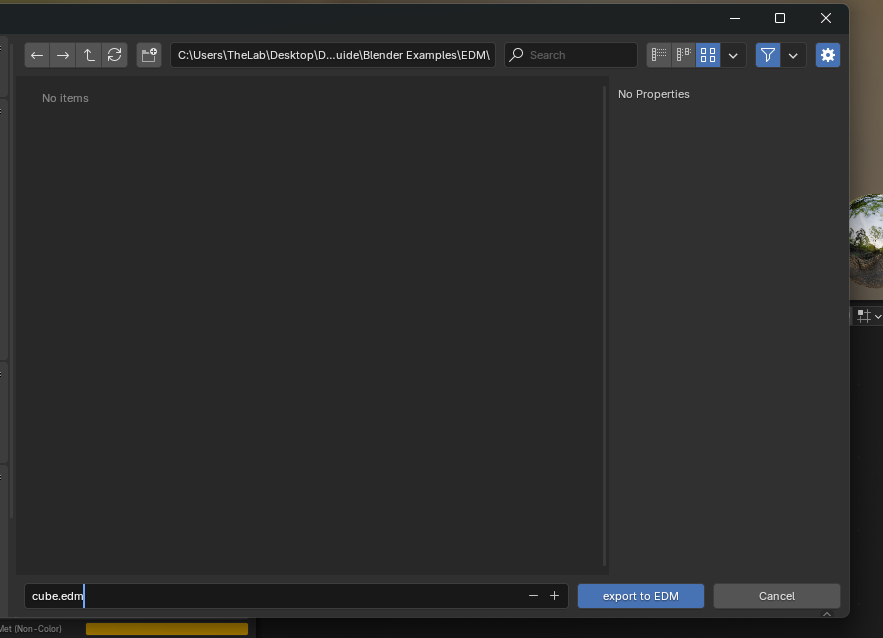
ModelViewer'da Açma#
ModelViewer'ı açın ve File > Load Model yoluna gidin veya CTRL + N kullanın.
EDM dosyanıza gidin, seçin ve load düğmesine basın.
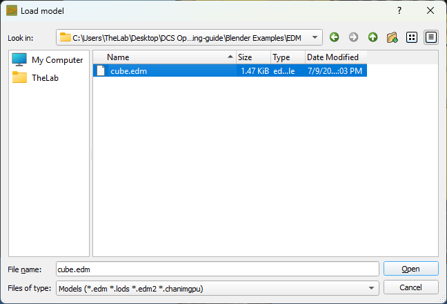
Aşağıdaki görsele çok benzeyen beyaz bir cube görmelisiniz.
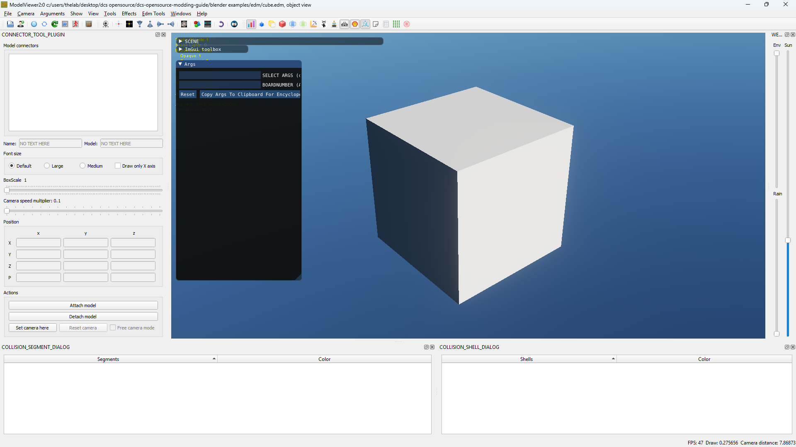
Birden Fazla Mesh/Materyal#
EDM materyali atanmış herhangi bir nesne DCS'e export edilir. İkinci bir mesh eklerseniz mevcut EDM materyalinizi atayın veya yeni bir tane ekleyin; DCS'e export edilir.
Mesh Başına Birden Fazla Materyal#
ED Exporter, mesh başına birden fazla materyali destekler. Özel bir kurulum gerekmez; mesh içindeki tüm materyallerin EDM materyali olarak yapılandırılması yeterlidir.
Texture Ekleme#
Node editor'e dönün ve Add > Texture > Image Texture yoluna gidin.
Ardından image texture üzerindeki Color ve Alpha noktalarını EDM Material üzerindeki Base Color ve Base Alpha noktalarına bağlayın.
Image Texture Node içinde görselinizi seçin. Projeniz aşağıdaki görsele benzer görünmelidir.
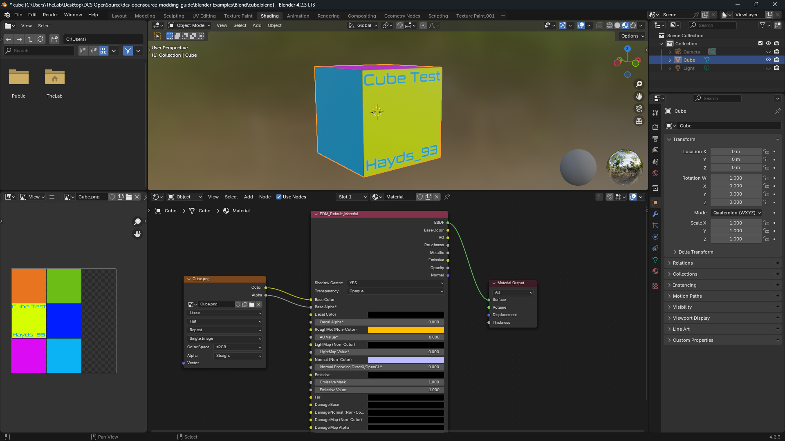
EDM'e Export Etme adımlarını tekrarlayın. Ardından ModelViewer'ı kapatıp yeniden açın ve EDM dosyanızı tekrar yükleyin.
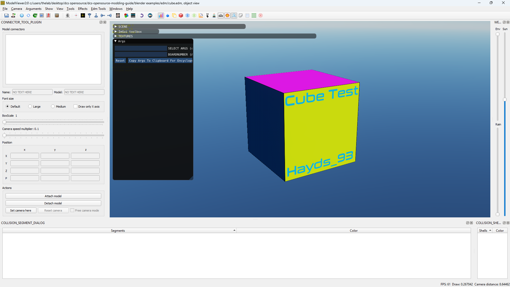
Warning
Texture'lar doğru şekilde mount edilmedikçe ModelViewer içinde görünmez.
Tipik çalışan dizin yapısı şöyledir: (bu çalışmazsa Discord üzerinden Hayds_93'e DM atın, güncellerim)
Blender Proje Yapısı#
Zorunlu olmasa da tüm LOD'ları (Level of Detail) ve collision modelini tek bir .edm dosyasına bake edebilirsiniz.
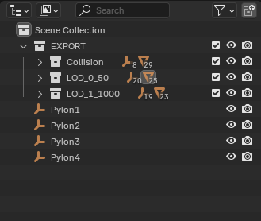
Bir EXPORT Collection ile başlayıp collision için alt collection'lar ve LOD_{LOD_NUMBER}_{LOD_DISTANCE_IN_M} (ör. LOD_0_50) alt collection'ları oluşturun.
Her alt collection'da mesh'in bir kopyası olmalı; animasyon veya parent paylaşmamalıdır. Animation empty'lerini duplicate edin ve action'ları yeni empty'lere yeniden uygulayın.
Yaygın Hatalar#
Index out of range hatası#
Buna benzer bir hata alırsanız:
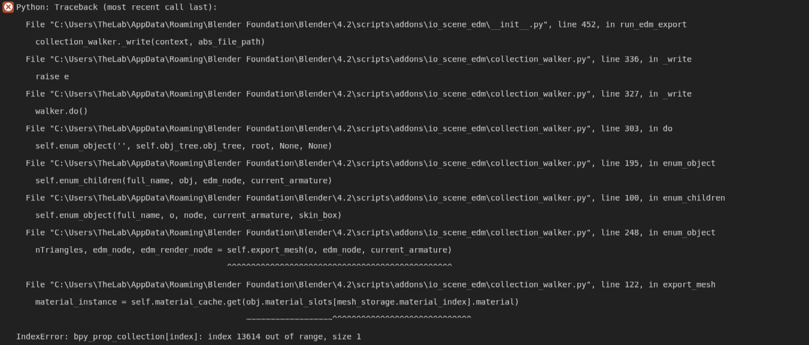
Bu hata büyük olasılıkla Blender sürümleri arasında dönüştürmeden kaynaklanan materyal bozulmasıyla ilgilidir. Çözmek için:
- Blender Python console'u açın ve şunu çalıştırın:
- Mesh'inizi yeniden export edin.